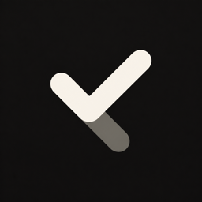

Nothing falls through.
Let unfinished items follow you to today. A “Carried from” date keeps their story attached, so you can pick up where you left off.
Book the dentistCarried from Wed, 4 Nov

timo. Take a lookA day planner for iPhone & iPad
Some things need a time. Some just need to get done. Timo brings them together in a day that feels like yours.
Find your rhythmMade for iOS & iPadOS 26 · In development
Plan the day. Leave space for life.
An illustrated sample day. Try ticking an item off.
01 / A day, not a dashboard
The appointment at two. The book you want to finish. The thing you meant to do yesterday. There’s a place for all of it.
Add a time when it matters. Leave it as Anytime when it doesn’t. Switch from a simple list to a timeline whenever you want a different perspective.
02 / Make time visible
A little perspective goes a long way.
Time view puts start times and duration tracks on the left, with readable item cards beside them. Overlapping plans get parallel tracks. The current-time marker stays with the clock, so a card’s position never pretends to be its start time.
03 / Thoughtful in the details
Small, considered touches that make a planner feel like it belongs on your phone.
Try Cancel. The details stay open.
Hold an item to reveal its actions, right inside the card. Find its saved history at the bottom of the editor. Cancel a plan without losing its place, undo a deletion, or return to the details after editing.
Personas bring Health, Work, Family, Friends, and Personal into the same day. Choose one for its own history, or bring everything back together.
Add a time, an end, reminders, a deadline, people, or places when they help. The editor keeps those details in compact, familiar controls.
04 / A gentle nudge
Set reminders for the moments that matter. Turn on Guide my day to follow timed items from the Lock Screen and Dynamic Island, from 15 minutes before they start, with the time remaining. A Lock Screen widget keeps today’s completion count close.
A native app for iPhone and iPad, with layouts that adapt to larger screens, Dynamic Type, VoiceOver, and Reduce Motion.
Your plan works offline. Optional iCloud sync keeps your devices together, and iCloud sharing lets you plan an item with someone else.
Start with your day, not a sign-up form. Timo stores your plan on the device and uses your iCloud account for optional sync and sharing.
Good to know
Timo is in development. This page introduces the current app; there isn’t a public App Store download here yet.
No. Keep an item as Anytime, or give it a start and optional end. List view brings everything together; Time view adds a clock and tracks for scheduled items.
Items with carry-over enabled follow you to today until completed or cancelled. The live item says “Carried from” its original day, and earlier days retain a “Carried to” entry. You choose whether each item carries forward.
The planner works locally and offline. iCloud is optional for syncing between your devices and is required when sharing items with other people.
Timo is built for iPhone and iPad running iOS 26 or iPadOS 26 and later. It supports Light and Dark appearance, larger text, VoiceOver, and Reduce Motion.
A little room for your day.
Thoughtfully made for iPhone & iPad. In development.